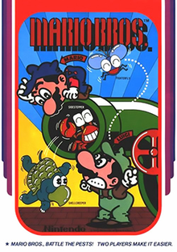
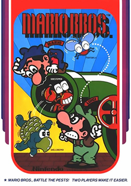

Shigeru Miyamoto

November 16, 1952 - XXX
Shigeru Miyamoto (Japanese: 宮本 茂, Hepburn: Miyamoto Shigeru, pronounced [mijamoto ɕiɡeɾɯ]; born November 16, 1952) is a Japanese video game designer, producer and game director at Nintendo, where he serves as one of its representative directors.
 
